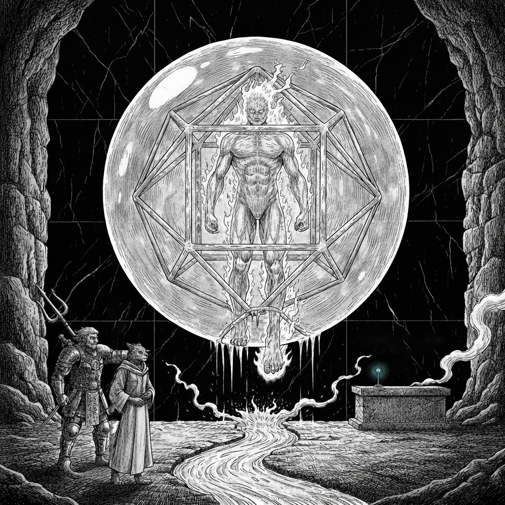

The secret door, now open, reveals a narrow, stone-lined corridor stretching into darkness. From that darkness, they shamble—two figures in robes the color of dried blood, their movements a slow, palsied parody of a walk. Their skin is ancient leather stretched over bone, their eyes hollow pits of shadow.
“Well,” Doctor Pepe mutters, his voice tight, “At least they’re slow.” A little louder, he alerts the rest of the party: “We’ve got zombies!”
Elara relays this in a sing-song voice to pass on the message: “Zombie! Zombie! Zombie-ie-ie!”
Kragor, a green-gray juggernaut of righteous fury, needs no encouragement. He barrels past Doctor Pepe into the hallway, his boots thudding on the strange, seamless stone. He sees not two, but four of the desiccated things lurching toward him. “Mactē virtutē,” he snarls, and a shimmering shell of magical frost crackles into existence around him. His war hammer swings, a blur of obsidian that connects with the first zombie’s shoulder. There is a flash of radiance, a dry snap, and the creature’s arm slumps, hanging limply from decayed sinew. “Gross!” Kragor barks.
Scarlet raises her staff, ready to unleash the fury of the earth should the dead things get any closer. Doctor Pepe snaps a bolt into his crossbow. He fires. The bolt screams past Kragor’s ear and ricochets off the ceiling with a sharp “ping”. The rogue melts back into the relative safety of the lab.
The first zombie, one arm useless, swings its good one in a clumsy arc that Kragor easily sidesteps. The second lurches forward, its own wild blow glancing harmlessly off the orc’s armor.
Gerhard steps up to the doorway, his bow already drawn. “Mors certa!” he cries, and the arcane mark flares on the second zombie. The arrow strikes true, punching through the creature’s chest. The thing stumbles but does not fall.
It is Elara’s arrow that finishes it. Her shot is clean, precise, and the second zombie collapses into a heap of robes, bones, and rotted flesh. Kragor, seeing his chance, chants “Te exsecro” as his eyes glow with a sickly green light. Suddenly, chartreuse arcs of light dance like smoke around the first zombie. Another swing of his war hammer, and the creature’s head separates from its shoulders, its unlife violently extinguished in an incandescent explosion.
And then, in the eerie silence, the fallen corpse of the zombie brought down by Gerhard’s and Elara’s arrows begins to stir. Bone knits to bone, and it rises again.
Miles away, Halite and Whisper approach the source of the steam plume. It billows from a ten-foot gap in the mountainside, a constant, ghostly exhalation.
“The mountain’s breathing,” Halite rumbles, his voice low with awe.
Whisper’s tail gives a single, decisive flick. “Let’s see if it has anything interesting to say.”
The air near the opening is surprisingly warm, a welcome respite from Foren’s bite, but the thick, rolling vapor forms an impenetrable wall.
“Can’t see a damn thing,” Halite states, peering into the white abyss. “But it’s warm. Too warm.”
“Better than freezing,” Whisper counters, already uncoiling a rope from her pack. “Give me your javelin.” It isn’t a question.
Halite grunts his approval. “Right. Sound thinking.”
Whisper ties the rope fast, and returns it to Halite. With a grunt, he hurls the weapon into the mist. It clatters on stone maybe thirty feet in. As he begins reeling it back, he feels a new resistance pull at the line. The javelin emerges coated in warm water that freezes almost instantly into a sheath of cloudy ice.
“Hot spring?” Halite queries, chipping the ice away with a gauntleted thumb.
“Or a bath for something very large and very angry,” Whisper muses, her eyes gleaming. “Tying in. You first, or me?”
Before he can answer, she secures the rope around her waist and his, then creeps forward. After a few paces, her next step finds no purchase. She lurches, her paw plunging into water before she catches herself with a soft hiss. The water is warm, smelling faintly of sulfur.
“Definitely a spring,” she calls back, her voice slightly muffled. “And I’m not getting my gear soaked. Going in.” She quickly sheds her equipment, her natural inclination for warmth overriding any caution. The water is chest-deep, and as she steps in, the accumulated stress of their long journey begins to melt from her bones. A gentle current pulls from her left. She wades against it until her hands meet the far stone wall of the large pool. The steam is thinner here, and she sees a narrow, furiously hot stream feeding the pool from an opening in the rock.
She climbs out onto a dry ledge just as Halite wades through to join her, the water only reaching his waist. For a moment, they are eye to eye, the goliath in the pool and the tabaxi on the ledge, surrounded by the mountain’s warmth.
“Alright, you’ve had your spa day,” Halite says, a hint of a smile in his voice. “What’s next?”
Whisper points a single, sharp claw toward a bright orange glow visible from the passage upstream.
“That,” she says. “That’s next.”
They follow the steaming, three-foot-wide stream into a vast cavern. A couple of walls here are not natural stone, but perfectly flat, polished marble. And in the center of the cavern, floating in absolute silence, is a massive, misty-blue, nearly transparent sphere.
Within the sphere floats a cage of shimmering electrum, its form a perfect, intricate dodecahedron. And inside the cage, suspended in absolute stillness, stands a giant figure made of flame. Its fiery tendrils are frozen, a silent, eternal inferno.
“What in the Ashkeeper’s crumbling peak is that?” Halite breathes, the words a cloud in the humid air.
“It’s a dodecahedron,” Whisper observes, her voice a low purr of intense focus. “And inside… a genie? An elemental? Whatever it is, it’s not moving.” Her tail twitches with a mixture of curiosity and caution.
They jump the narrow, steaming stream to get a closer look. Against a polished wall surface stands a strange table that seems to grow directly from the wall itself.
“This wall… it’s impossibly smooth. Unclimbable!” Whisper complains, running her claws over the seamless marble. They find no purchase.
“But what craftsmanship,” Halite murmurs, running a gauntleted hand over the table. “No seams, no tool marks. It’s like it was sliced from the mountain with a vorpal sword.”
On the table, a small light glows a steady azure at one end, while a simple lever rests at the other. Strange, flowing script is carved into the marble before each. Neither Halite nor Whisper can make sense of it.
Whisper’s unquenchable curiosity wins. With a confident movement of her wrist, she pulls the lever.
“Are you sure that’s a good idea!?” Halite bellows, startled.
The azure light on the table blinks off. Then it blinks red once, twice, then winks out. The azure light returns, glowing steadily once more. Nothing else seems to happen. The caged flame remains perfectly still.
“Well, that was anticlimactic,” Whisper says with a shrug, and pulls the lever again. Again, the light switches from azure to two red blinks, then back.
Halite grimaces at her. “You and your levers.” He crouches down, running his hands over the strange table, looking for any other clues. Underneath, his fingers brush against a small, corked bottle. He pulls it out. A golden metal filigree, adorned with strange writing, wraps around a glass core. Within the bottle, something blue and iridescent swirls like a captured galaxy.
“Ooh, shiny,” Whisper coos, leaning over his shoulder.
“And probably cursed,” Halite grunts, stashing it securely in his backpack. “It stays there until we find someone who doesn’t poke at things for fun.”
He turns back to study the motionless figure of flame. The longer he stares at its massive, frozen form, the smaller and more insignificant he feels. He notices then that the sphere seems to be set directly against the marble wall, and the hot stream originates from that exact spot.
He moves to investigate more closely, his boot slipping on the damp floor. He trips, throwing out a hand to steady himself. His palm slaps against the blue sphere. It doesn’t yield. It feels more solid than the mountain itself.
Now that he is closer, he sees the detail he couldn’t make out from across the room. On this side, near the floor, the electrum cage is warped, a few of its bars bent outward. Through that gap, the fiery figure’s back heel protrudes, just barely breaking the surface of the sphere. There, and only there, the flames are active, licking and dancing as they meet the constant flow of snowmelt from a fissure in the rock, creating the intensely hot stream of water that warms the entire cavern.
“Whisper,” Halite says, his voice low. “Get over here. You need to see this.” He points. “The whole hot spring… it’s just runoff from a prisoner’s leaky cell.”
They explore the rest of the vast cavern, but find nothing further of note. The silent, flaming giant in its blue prison remains the sole, baffling mystery.
“Think we could break it out?” Whisper asks, tapping a claw against the unyielding blue sphere. The sound is a dull, dead thud.
“And unleash that?” Halite rumbles, gesturing to the silent inferno. “I’d rather not be the one to thaw out whatever it is. It was put in here for a reason.”

“But what reason?” she muses, her tail lashing with thought. “A power source? A guardian? An eternal punishment?” She trots back to the console. “Maybe if I try the lever just one more time…”
“Don’t you dare,” Halite warns, his voice flat. “We have no idea what this is. For all we know, that thing is counting the red flashes and waiting for the right number to break free and turn us into cinders.”
Whisper sighs theatrically. “You’re no fun.” She makes one last circuit of the room, running her claws fruitlessly against the seamless marble walls, while Halite gives the sphere a wide berth. His gaze fixes on the frozen, fiery giant. The sheer scale of it is humbling.
Having exhausted their curiosity for the moment, their thoughts turn back to the rest of their party and their quest.
“Alright,” Halite says, turning his back on the prisoner. “We’ve seen the mountain’s furnace. There’s nothing more for us here. Let’s go find the others. Knowing Kragor, he’s probably charged headfirst into a wall by now.”
Whisper casts one last, longing look at the sphere. “Fine. But we’re coming back here.”
They wade back through the warm pool, the shock of Foren’s cold air hitting them like a physical blow as they emerge from the steam. Shivering, they return the way they came, their snowshoes crunching in the snow as they head back toward Salsvault.
Back inside, Scarlet recites “Ignis vagus” and her hand flashes. A mote of fire leaps from her palm and engulfs the re-risen zombie, which collapses once more into a smoldering pile. Doctor Pepe, peeking from his hiding place, targets one of the remaining zombies, but his crossbow misfires. “Raven Queen’s beak!” he spits.
A third zombie reaches Kragor. It brings both fists down on the orc, who shrugs it off with fiendish vigor. The magical frost of his armor lashes out, and the creature recoils, its own fists pierced by ice. The fourth closes in, but its attack is clumsy, glancing off Kragor’s armor.
“There are more of them!” Gerhard yells, peering down the long hall and spotting a fifth and a sixth walking corpse. He marks the fourth zombie and sends an arrow into its neck, leaving a terrible wound.
At that moment, Halite and Whisper arrive at the entrance to Salsvault. Hearing the sounds of battle, Halite unslings his trident and enters without a word. Whisper is a blur of motion behind him. She streaks past the party, into the hallway, a creature of pure, fluid speed. She leaps onto the fourth zombie, grappling it. In a flash, her claws rend the restrained corpse. It falls, then immediately begins to knit itself back together. A second slash from her claws tears it apart again, and this time, it stays down.
Elara’s voice rings out, “Sidereus lumen!”, and a mote of starlight flies from her hand, striking the third zombie. It shudders. Kragor follows with a final, crunching blow from his hammer. A blazing corona of light erupts from the hammer to consume the third zombie’s head. It does not get back up; it simply ceases to be.
Scarlet hurls another flame down the hall, striking a fifth zombie that has just shambled into view. Doctor Pepe, giving up on his crossbow, rushes forward, dagger and shortsword in hand. He fumbles his first strike but connects with his second. Halite, now in the hallway, takes aim and throws his trident. It passes clean through the zombie, pinning it to the floor. It, too, falls apart.
The sixth and final zombie lumbers forward, swinging at Doctor Pepe, who skillfully evades the blow.
Gerhard marks it, but his arrow zips past the ears of both rogue and zombie. As Whisper moves to engage, her foot tangles in Gerhard’s discarded, broken bowstring. She trips, falling prone with a curse. She rights herself in an instant, lashing out with her claws. Two quick strikes leave the final zombie reeling.
Elara ends it. Another wisp of starlight, another flash of radiant energy, and the last of the undead guardians is utterly destroyed.
Silence, thick and heavy, falls over the corridor.
Doctor Pepe and Halite creep to the end of the hall, peering around the corner. More doors. More of Salsvault’s sterile, silent mystery.
As the others catch their breath, Kragor inspects one of the fallen zombie’s robes. “Strange,” he says, rubbing the material between his fingers. “It’s like plant fiber, but… not. And it’s not rotted at all. For being nine hundred years old, it’s in perfect shape.”
“Waste not,” Whisper says, already pulling one of the robes over her own clothes. Kragor and Gerhard follow suit, the strange, ancient garments settling over their armor.
The reunited party gathers in the entryway.
“You missed a hell of a thing,” Halite says, his voice low with awe. He and Whisper describe the cavern, the marble walls, the massive blue sphere, and the flame prisoner. Halite then produces the bottle. “And we found this under the strange table.”
Doctor Pepe takes it, turning it over in his hands. “I can’t read this… it’s Draconic, like the script on the walls, but … it’s not words.” He pauses for a moment, recalling a memory. “But I remember an old wizard telling me that Draconic is a common language for spell scrolls.”
“Perhaps the writing itself is part of the enchantment,” Elara suggests.
“Whatever it is,” Scarlet says, looking from one exhausted face to another, “that warm cavern you found sounds like the perfect place to rest. We’re no good to anyone if we collapse in here.”
The party quickly reaches a consensus. They leave Salsvault the way they came, strap their snowshoes back on, and trudge across the snow and up the mountainside to the cavern’s steamy entrance. Kragor carefully unstraps the massive dragon egg from his back, leaving it just outside. “Don’t want the little one to cook,” he mutters.
Inside, the warmth is a welcome shock. The air is humid, filled with the gentle sound of the stream. They settle near the great blue sphere, its silent presence both unnerving and strangely calming.
Scarlet frowns. “The elemental planes are places of pure creation. Sometimes, when a piece of one bleeds into our world, it brings its nature with it. That creature in the sphere… it’s a fire elemental. A powerful one, to heat this much water.”
Doctor Pepe examines the small console table near the sphere. He runs a finger under the script. “Here,” he says. “Next to the lever, it says Power Interrupt. And this script, by the light? Energy Regnum Only.”
“A trap… or a prison,” Halite rumbles, staring at the still, flaming figure within the cage, within the sphere. “And we’re sleeping in the warden’s office.”
As Kragor lies down on the smooth marble floor, he feels it—a low, rhythmic humming vibrating up through the stone. “Anyone else feel that?”
Watches are set. Halite takes the first, Scarlet the second. The humming continues, a deep, resonant pulse beneath them, but nothing disturbs their rest. For the first time in what feels like an eternity, they sleep soundly, warmed by the impossible heat of a caged, primordial fire. Morning finds them rested, healed, and ready to face the sunken secrets of Salsvault once more.